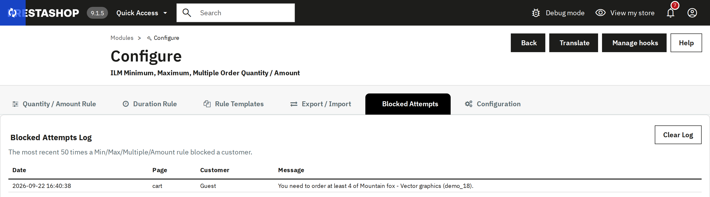

A live log of the most recent 50 times a Min/Max/Multiple/Amount rule actually stopped a customer — the date, the page, the customer, and the exact message they saw. Use Clear Log to empty it.

A real block, captured live: a guest tried to add 1 unit of a product whose Minimum Quantity is 4.
Each entry also says what the block did: Message shown on the product page or in the cart (the shopper was told), Checkout stopped (the order page sent the shopper back to the cart), or Order stopped at payment followed by the payment module (see Checkout protection).